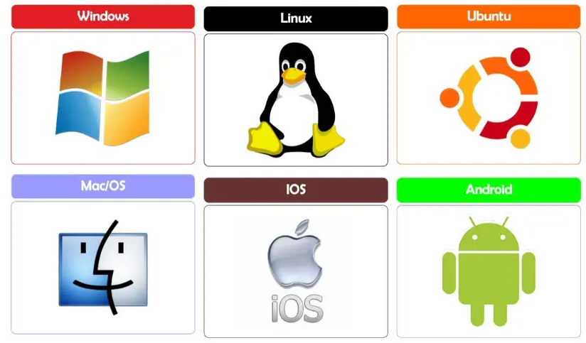
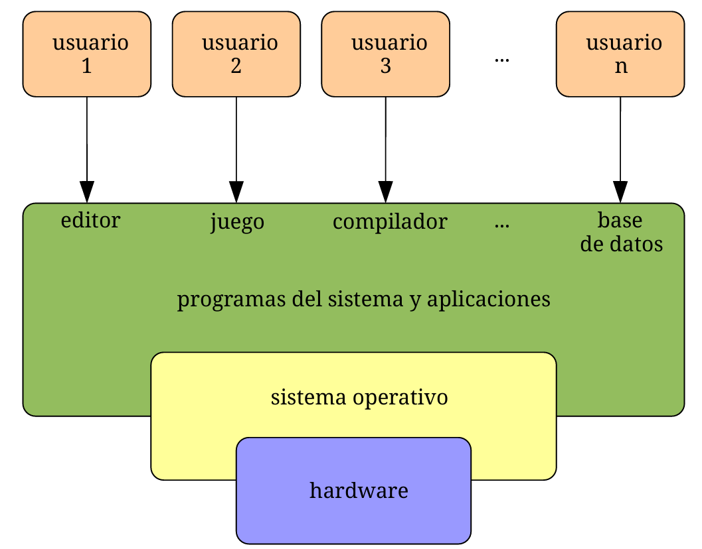
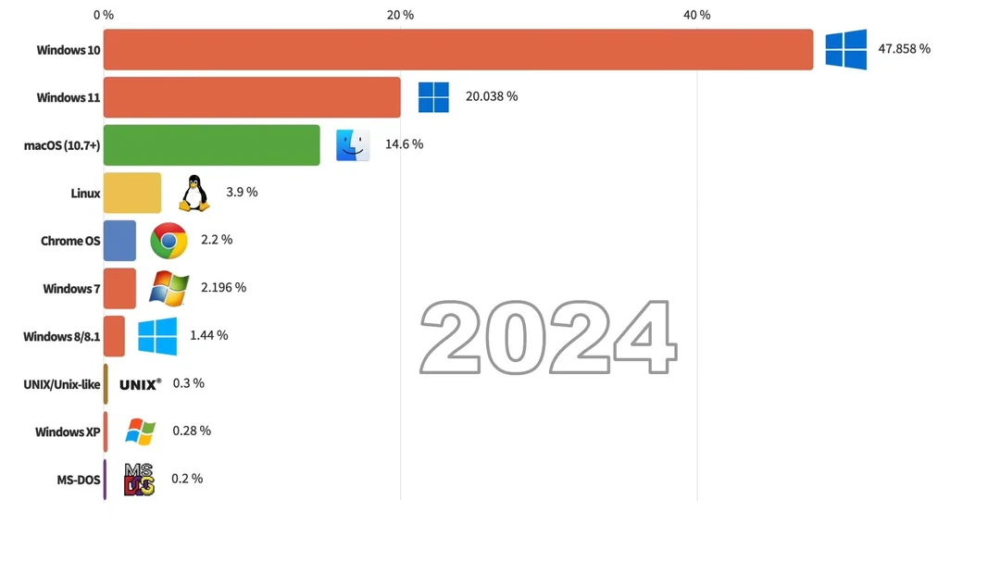
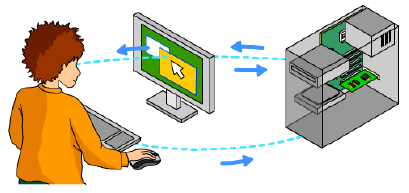
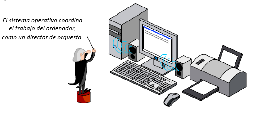
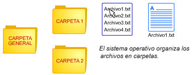
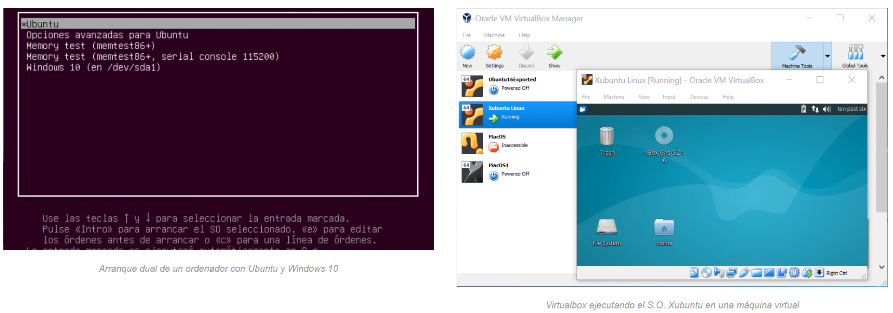
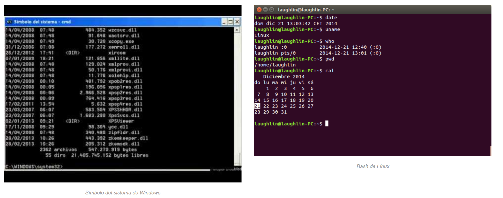
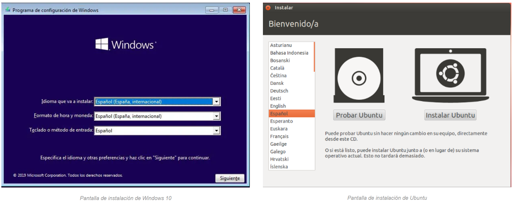
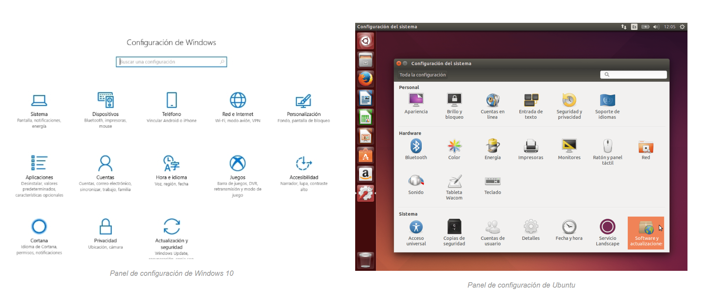

Software¶
Software¶
La residencia de mayores del pueblo va a impartir un curso de introducción a la informática para mayores y ha hecho un llamamiento a la población para que donen ordenadores que ya no utilicen para este fin.
En el Centro disponemos de algunos ordenadores antiguos que no utilizamos (Los que empleamos en la situación de aprendizaje del apartado anterior) y sería una buena idea donarlos para por una parte reutilizarlos en lugar de tirarlos al punto limpio y por otra parte darles un uso social.
Como son ordenadores antiguos, vamos a instalarles un sistema operativo ligero, pero a la vez actual. Además, sería interesante optar por un sistema operativo libre para no tener que gastar dinero en licencias.
Pero antes debemos conocer los distintos sistemas operativos que existen y sus características y vamos a realizar unas actividades para reforzar lo aprendido.Software¶
El software es la parte lógica de un sistema informático, que está formado por los programas, datos, drivers, etc. El software es el conjunto de órdenes que tiene que realizar un ordenador, por tanto, éste no sabe hacer nada sin un software adecuado.
Tipos de software¶
Se pueden encontrar distintos tipos de software:
-
Software de sistema: Es el software que nos permite tener una interacción con nuestro hardware, es decir, el que controla la CPU y los periféricos; también es llamado sistema operativo. Dicho sistema es un conjunto de programas que administran los recursos del hardware y proporciona una interfaz al usuario. Es el software esencial para una computadora, sin el no podría funcionar, como ejemplo tenemos a Windows, Linux, Mac OS X. Se clasifica en:
- Sistemas operativos: Windows, Linux, Mac Os, etc.
- Controladores de dispositivo: Drivers, firmware.
- Utilidades de sistema: Herramientas de diagnóstico, corrección y optimización.

-
Software de Programación: Es un conjunto de aplicaciones que permiten a un programador desarrollar sus propios programas informáticos haciendo uso de sus conocimientos lógicos y lenguajes de programación. Algunos ejemplos:
- Editores de programas
- Compiladores
- Intérpretes
- Enlazadores
- Depuradores
- Entornos de Desarrollo Integrados (IDE)

-
Software de Aplicación: Son los programas que nos permiten realizar tareas especificas en nuestro sistema. A diferencia del software de sistema, el software de aplicación esta enfocada en un área especifica para su utilización. La mayoría de los programas que utilizamos diariamente pertenecen a este tipo de software, ya que nos permiten realizar diversos tipos de tareas en nuestro sistema. Las aplicaciones son parte del software de una computadora, y suelen ejecutarse sobre el sistema operativo.
- Editores gráficos, de música, de video, etc.
- Sistemas gestores de bases de datos. (MySQL)
- Programas de comunicaciones.
- Paquetes integrados de ofimática. (Editores de texto, hojas de cálculo, bases de datos, etc.).
- Programas de diseño asistido por computador.
- Aplicaciones de Sistema de control y automatización industrial.
- Software educativo.
- Software médico.
- Software de cálculo numérico.

Una aplicación de software suele tener un único objetivo: navegar en la web, revisar correo, explorar el disco duro, editar textos, jugar, etc. (Ejemplo: Internet Explorer, Outlook, Word, Excel, WinAmp, etc.).
Una aplicación que posee múltiples programas se considera un paquete. (Ejemplo: Microsoft office, LibreOffice, etc.).
En general, una aplicación es un programa compilado, escrito en cualquier lenguaje de programación.
Las aplicaciones pueden tener distintas licencias de distribución como ser freeware, shareware, trialware, etc.
Las aplicaciones tienen algún tipo de interfaz, que puede ser una interfaz de texto o una interfaz gráfica (o ambas).
Actividades¶
📝 AA2.12¶
(C.ESP2 / CE2.3 / IC1-3p)
- ¿Por qué es necesario el software en un ordenador?
- ¿Qué tarea realiza el software de sistema?
- Nombra los sistemas operativos más conocidos.
- ¿Qué es el software de programación?. Pon un ejemplo.
-
Busca en Internet el nombre de un programa de Windows y otro de Linux que sirvan para…
- Navegar por Internet
- Retocar una foto
- Hacer un dibujo técnico
-
El software puede ser freeware, shareware o trialware. ¿En qué consiste cada una de estas modalidades?
- ¿Qué es la interfaz de un programa?
Sistemas Operativos¶
El sistema operativo (SO) es el software principal de un ordenador o cualquier otro dispositivo electrónico, se inicia al encender el equipo, se encarga de gestionar los recursos del sistema (hardware y software) y permite la comunicación del usuario con la máquina.

Los sistemas operativos no solo gestionan ordenadores, sino que se encuentran en todos los dispositivos que utilicen microprocesadores para funcionar: teléfonos móviles, tabletas, libros electrónicos, navegadores, smart TV´s, etc. Estos dispositivos deben de disponer de un sistema operativo que permita al usuario navegar por menús y ejecutar las aplicaciones instaladas:
Existen multitud de sistemas operativos: Android, iOS, Symbian OS, Windows, Firefox OS, Ubuntu, MacOS, Red Hat, Ubuntu, Debian, GNU Linux, etc. pero la familia de sistemas operativos Windows es la más utilizada, pues ofrece distintas versiones según el destinatario: servidores, empresas, usuarios personales y dispositivos móviles

Tipos de sistemas operativos¶
Los sistemas operativos pueden clasificarse utilizando diversos criterios:
Existen sistemas monousuario, en los que sólo un usuario puede trabajar con el ordenador en un momento dado (a este grupo pertenecen las primeras versiones de muchos sistemas) y sistemas multiusuario, que permiten la ejecución de procesos u órdenes de varios usuarios a la vez (actualmente casi la totalidad de los sistemas son de este tipo).
Hay sistemas monotarea, que no pueden ejecutar más de un programa a la vez, y sistemas multitarea, que permiten la ejecución concurrente en la memoria del ordenador de varios programas (lo habitual hoy en día es que el sistema sea multitarea).
Hablamos de sistema operativo de red si se ha fabricado para un entorno empresarial o para un servidor de red, es decir, para uno de los ordenadores principales de una empresa u organización (sistema servidor), y hablamos de sistema monopuesto si se trata de un sistema para ordenadores personales.
Distinguimos entre sistemas de software libre o libre distribución (son gratuitos) y sistemas propietarios (cuya licencia se debe pagar, incluida o no en el precio del equipo).
Tip
El sistema operativo libre más utilizado es Linux, que tiene varios sistemas operativos derivados como Android y tiene varias versiones como EducaAndOs, la versión más utilizada hoy día es Ubuntu.
El sistema operativo propietario más usado es Windows, que tiene varias versiones, la versión actual es Windows 11.
Principales funciones del sistema operativo¶
Podemos resumir las funciones del sistema operativo en las siguientes:
- Proporciona una interfaz de comunicación entre el usuario y la máquina, empleando un lenguaje común (órdenes o comandos) o mediante elementos visuales intuitivos (ventanas, menús, cuadros de diálogo, etc.).

- Controla el funcionamiento de los dispositivos (memoria, disco duro, impresoras, etc.) para que los usuarios puedan acceder a ellos y usarlos. Por ello, el sistema necesita configurar y reconocer cada uno de los dispositivos del hardware.

-
Administra la instalación y ejecución de las aplicaciones del usuario, dotándolas de los recursos de hardware necesarios y controlando los posibles fallos que puedan generar.
-
Gestiona el proceso de almacenamiento de la información en los distintos soportes o discos, así como los movimientos de datos que se realizan entre los distintos componentes del ordenador.

- Proporciona medidas de seguridad para que los distintos recursos utilizados por los usuarios y las aplicaciones sigan unos permisos y reglas que impidan un uso accidental o no autorizado.
Los sistemas operativos actuales incluyen numerosas herramientas en forma de programas accesorios: reproductores multimedia, servicios de actualización, complementos para compresión y grabación de archivos, etc.
Cada vez son más los usuarios que disponen de dos sistemas operativos en un mismo equipo. Para hacerlo se necesita particionar el disco duro y tener un programa de arranque que nos permita seleccionar el sistema operativo con el que queramos trabajar. También es posible disponer de un programa que actúe como máquina virtual (como Virtual Box), en el que se instale un nuevo sistema operativo.

Actividades¶
📝 AA2.13¶
(C.ESP2 / CE2.3 / IC1-3p)
- ¿Qué es un sistema operativo? Nombra algunos.
- ¿Cuáles son los sistemas operativos más utilizados?
- ¿Qué sistema operativo tienes en tu ordenador y en tu móvil?
- Nombra los distintos tipos de sistemas operativos que existen.
- ¿Cuáles son las principales funciones de un sistema operativo?
- Busca información sobre VirtualBox.
El intérprete de comandos¶
El intérprete de comandos es una aplicación que se utiliza para comunicar al usuario con el sistema operativo mediante la escritura de órdenes que son conocidas por el sistema para la realización de unas tareas.
El usuario escribe un comando u orden que el sistema operativo interpreta para ejecutar una determinada acción.
La respuesta del sistema operativo a esta orden aparece en una nueva línea en la misma ventana. Al intérprete de comandos también se le da el nombre de símbolo de sistema, cmd, consola de comandos o Shell del sistema operativo.
En Windows, el símbolo de sistema utiliza los comandos de MS-DOS, uno de los primeros sistemas operativos para ordenadores personales, que aún subyace en el sistema operativo.

Instalación de un sistema operativo¶
Por lo general, cuando compramos un ordenador personal, este suele tener el sistema operativo preinstalado, ya sea de forma comercial con Windows o MAC o de forma libre y gratuita con alguna distribución Linux. Sin embargo, en muchas ocasiones nos vemos obligados a formatear el disco duro de nuestro ordenador y a reinstalar de nuevo el sistema operativo. Lo primero que necesitamos para ello es el disco de instalación del sistema.
En el caso de Ubuntu, podemos obtener el archivo .iso en la zona de descargas de su sitio web y posteriormente grabar este archivo .iso en un DVD o en pen-drive, de este modo, ya tendremos un medio de instalación de Ubuntu. Si se trata de Windows, se puede comprar un disco de instalación con su licencia incluida, o bien descargar una versión de prueba, grabarla en un disco y después activarla con nuestra licencia comercial.
Para comenzar una instalación limpia del SO, iniciamos el equipo con el disco de instalación ya colocado en el lector de DVD o con el pen-drive conectado. Para asegurarnos de que se va a leer el disco de instalación antes que nuestro disco duro, debemos cambiar la secuencia de arranque entrando en la BIOS. Cada ordenador tiene su combinación de teclas para entrar en la BIOS; nada más encender el ordenador nos aparece un mensaje durante unos segundos en la zona inferior de la pantalla informando de dicha combinación de teclas, que en la mayoría de los casos suelen ser Esc, Del, Supr, F2 o F10.
Dentro de la BIOS tenemos que cambiar la secuencia de arranque y dejar en primer lugar el lector de DVD o la unidad USB (si estamos utilizando un USB booteable). Tras estos cambios, iniciamos el ordenador y comenzará la instalación del sistema operativo.
Una vez iniciado el sistema desde el disco de instalación, solamente hay que seguir los pasos del asistente de instalación del sistema operativo elegido.
Discos booteables
Los discos booteables o de arranque contienen unos archivos que son reconocidos en el arranque de los ordenadores para iniciar la instalación del SO. En la actualidad, podemos convertir un pendrive USB en booteable y evitar así tener que grabar un DVD. De este modo, el ordenador, al iniciarse, leerá el USB y comenzará la instalación del SO copiado en el lápiz de memoria. Este USB se utiliza cuando el equipo no dispone de unidad óptica, como en los ultrabooks.
Existen muchas aplicaciones que nos permiten grabar un archive .iso en un pendrive y convertirlo así en booteable, como por ejemplo Universal USB installer.

Los sistemas operativos actuales poseen grandes bases de datos con información sobre los drivers de la mayoría de nuestros dispositivos, por lo que serán reconocidos e instalados sin que tengamos que intervenir. Si existe algún elemento sin drivers, aparecerá en el administrador de dispositivos del panel de control de Windows o en el Administrador de hardware de las preferencias de Ubuntu.
Configuración de un sistema operativo¶
Los sistemas operativos actuales son muy flexibles en cuanto a configuración y personalización a través de una aplicación llamada «Panel de control«, «Configuración» o «Ajustes«.
Aspectos más destacables que se pueden configurar:
- Usuarios que pueden acceder al sistema y sus roles (Administrador, usuario, etc.)
- Periféricos (Ratón, teclado, altavoces, impresora, etc.)
- Programas por defecto para abrir los distintos tipos de archivos.
- Conexiones (Cable ethernet, wifi bluetooth, etc.)
- Antivirus y antispyware.
- Control de notificaciones.
- Bloqueo de pantalla.
- Fondo de pantalla.
- Nivel de brillo de la pantalla.
- Tipo y tamaño de letra.
- Accesibilidad

Actividades¶
📝 AA2.14¶
(C.ESP2 / CE2.3 / IC1-3p)
- ¿Qué es el intérprete de comandos? Nombra algunos.
- ¿Se puede manejar un ordenador solo con el intérprete de comandos?
- Describe los pasos para instalar un sistema operativo descargado de Internet en un ordenador.
- Busca y escribe la ruta de descarga de la ISO de Ubuntu de Windows
- ¿Cómo podemos cambiar la secuencia de arranque de un ordenador y para qué se hace?
- ¿Qué es un USB booteable?
- Qué aspectos se pueden configurar en un sistema operativo.
- Busca imágenes de la pantalla de configuración de los sistemas operativos de teléfonos móviles.
📝 PT2.15 Reciclaje de los ordenadores antiguos del centro¶
(C.ESP2 / CE2/ IC2-10p)
La residencia de mayores del pueblo va a impartir un curso de introducción a la informática para mayores y ha hecho un llamamiento a la población para que donen ordenadores que ya no utilicen para este fin.
En el Centro disponemos de algunos ordenadores antiguos que no utilizamos (Los que empleamos en la situación de aprendizaje del apartado anterior) y sería una buena idea donarlos para por una parte reutilizarlos en lugar de tirarlos al punto limpio y por otra parte darles un uso social.
Como son ordenadores antiguos, vamos a instalarles un sistema operativo ligero, pero a la vez actual. Además, sería interesante optar por un sistema operativo libre para no tener que gastar dinero en licencias.
Para ello, realiza los siguientes pasos:
- Investiga sobre sistemas operativos ligeros para ordenadores antiguos basados en Linux.
- Descarga la ISO del sistema operativo elegido.
- Haz un USB booteable con la ISO descargada.
- Instala el sistema operativo en el ordenador.
- Conecta el ordenador a Internet.
- Configura el sistema operativo con letras grandes.
Realiza una presentación de las características de un sistema operativo elegido, para ello vamos a utilizar la herramienta online CANVA , PowerPoint o Impress.
WINDOWS 5.- Haz una captura de pantalla del panel de control de tu sistema operativo y pégala en el documento. 6.- Haz un listado de las principales herramientas del panel de control, y qué podemos configurar en cada una de ellas. 7.- ¿Qué es el desfragmentador de disco duro? 8.- Haz una captura de imagen del estado de tu disco duro (ejecutar el desfragmentador y hacer clic en analizar). 9.- Haz una captura de imagen del desfragmentador durante el proceso de desfragmentado. 10.- Haz una captura de imagen del estado de tu disco duro una vez desfragmentado el disco).
LINUX-UBUNTU 11.- ¿Qué es un Sistema Operativo GNU? 12.- ¿Qué es un LiveCD? ¿Y un LiveUSB? 13.- Indica varios ejemplos de distribuciones Linux de España. 14.- Haz una captura del escritorio de UBUNTU. 15.- Haz una captura de pantalla mientras configuras la red wifi. Pégala en el documento. 16.- Ejecuta el centro de software de Ubuntu y busca un programa de dibujo. Haz una captura de pantalla y pégala en el documento. 17.- Busca la Configuración del Sistema y haz una captura de pantalla. Pégala en el documento. 18.- Cambia la imagen del escritorio y haz una captura de pantalla. Pégala en el documento. 19.- Crea una carpeta con tu nombre en el escritorio. Haz una captura de pantalla. Pégala en el documento. 20.- Abre el navegador de archivos y accede hasta la unidad C:/. Haz una captura de pantalla. Pégala en el documento. 21.- Abre la configuración del reloj y calendario. Haz una captura de pantalla. Pégala en el documento. 22.- Comprime varios archivos en uno solo con el programa que lleva Ubuntu y guarda este archivo en el escritorio. Haz una captura de pantalla. Pégala en el documento. 23.- Indica con el puntero del ratón el icono con el cual podemos alternar entre los escritorios múltiples. Haz una captura de pantalla. Pégala en el documento.
DISCO DURO 24.- ¿Qué es el disco duro? 25.- ¿Cuál es la estructura interna de un disco duro? 26.- Indica los tipos de disco duro. 27.- ¿Qué es una partición del disco duro? ¿Qué ventajas se consiguen con las particiones? 28.- ¿Qué es la estructura lógica de un disco duro? 29.- ¿Qué es el sector de arranque?